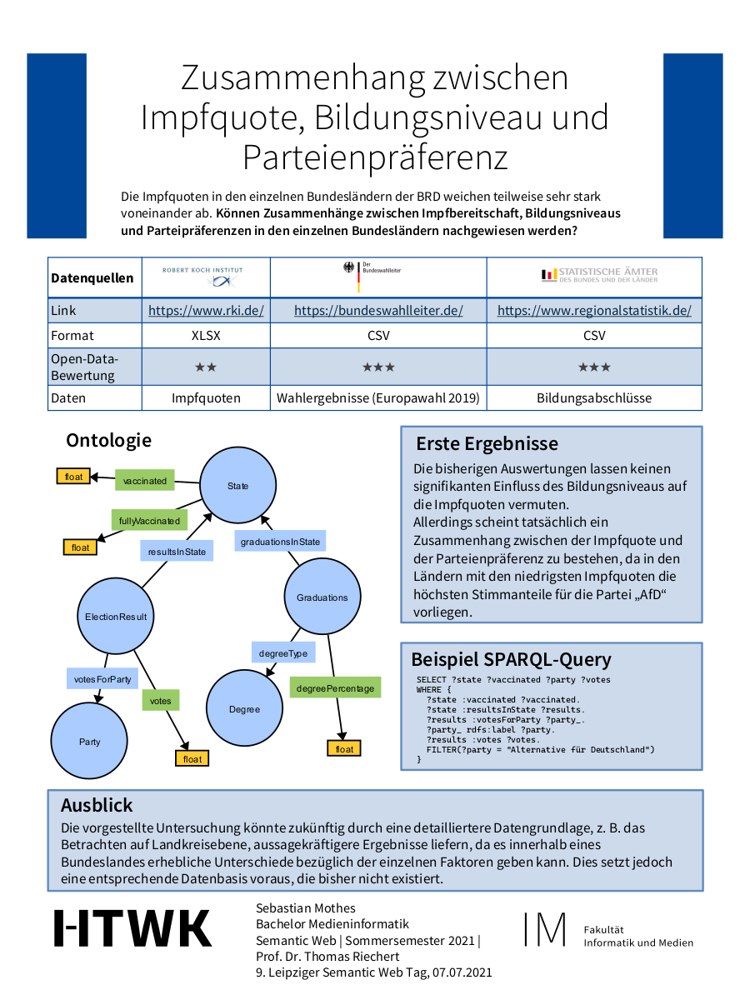

Sebastian Mothes
Die Impfquoten in den einzelnen Bundesländern Deutschlands weichen teilweise sehr stark voneinander ab. Können Zusammenhänge zwischen Impfbereitschaft, Bildungsniveaus und Parteipräferenzen in den einzelnen Bundesländern nachgewiesen werden?
The vaccination rates differ significantly in some of Germany's states. Can correlations between vaccination willingness, education levels, and party preferences in the individual German states be proven?
